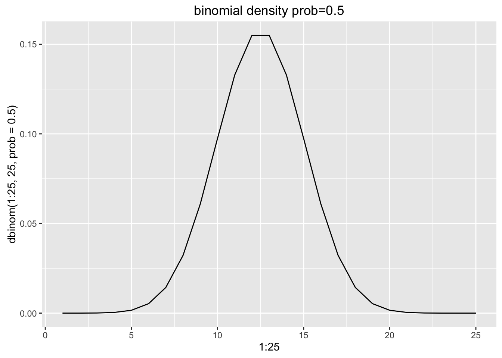
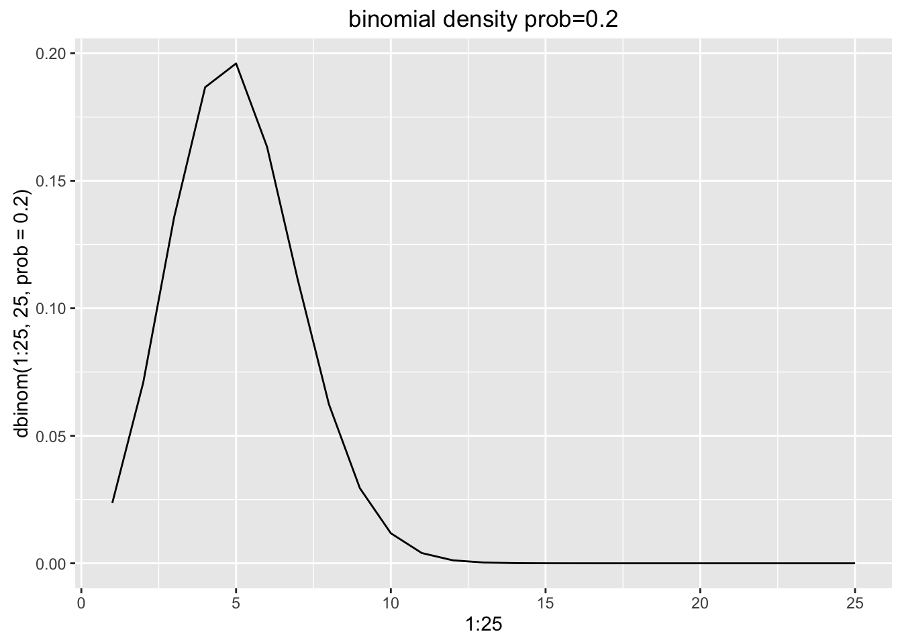
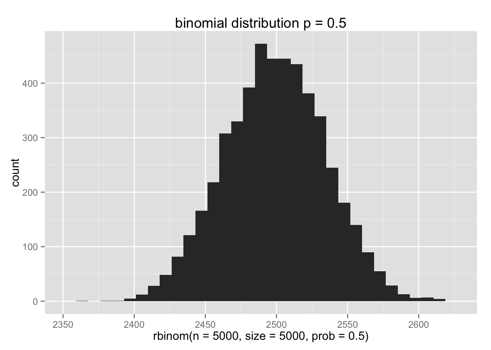
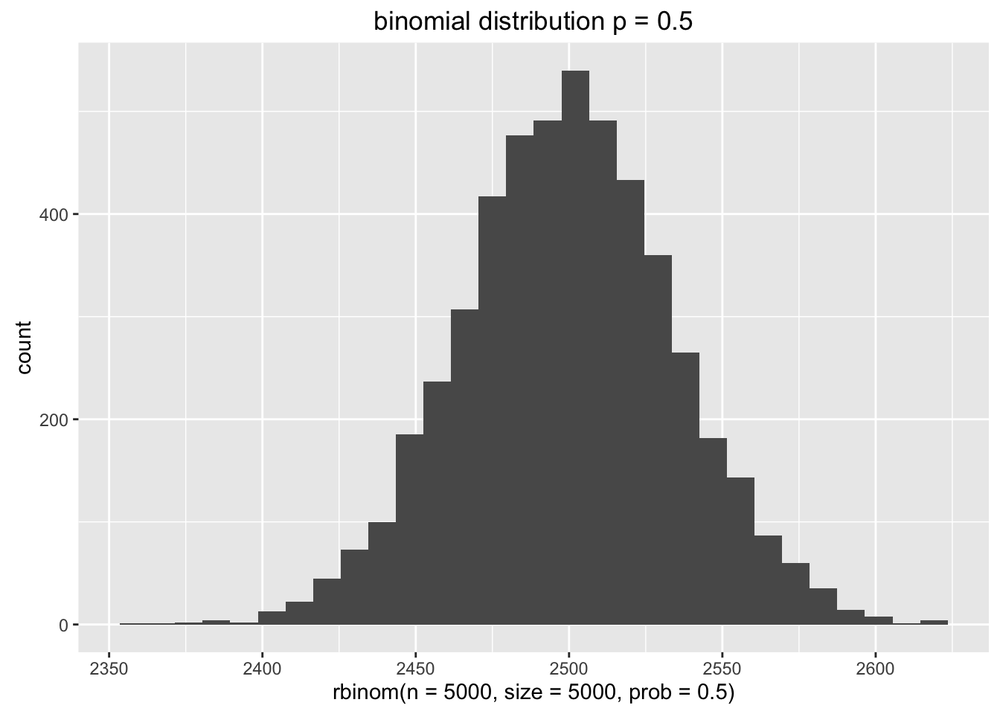
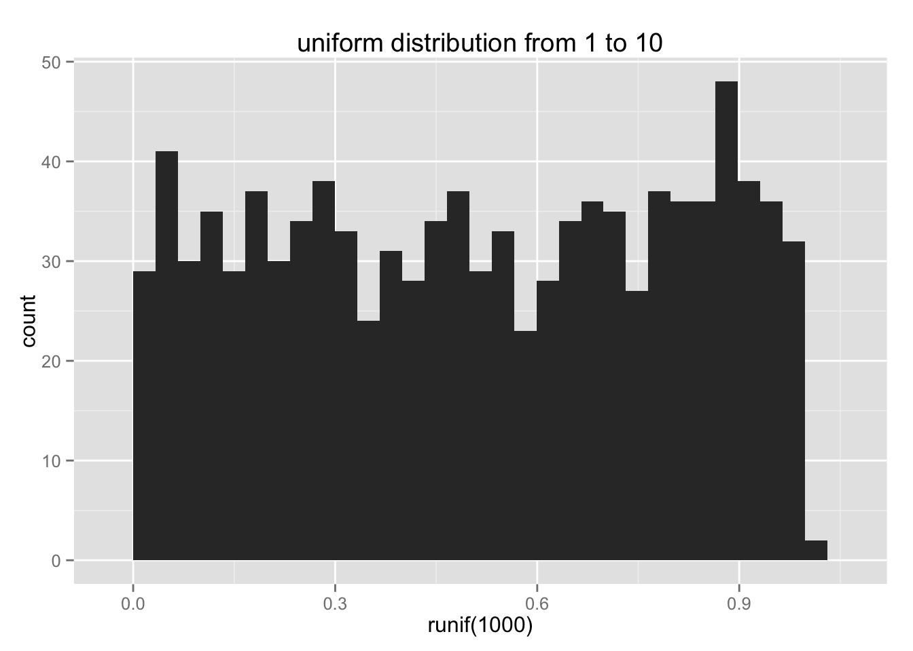
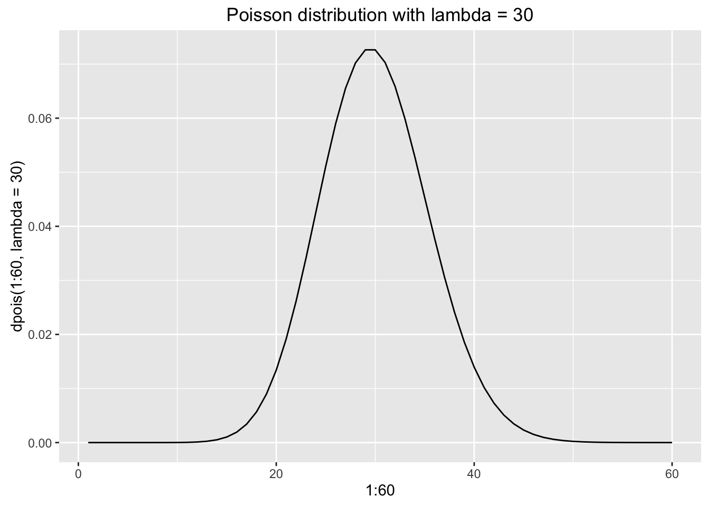
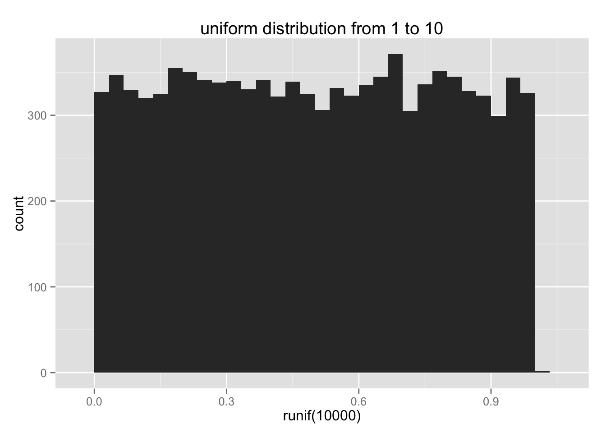
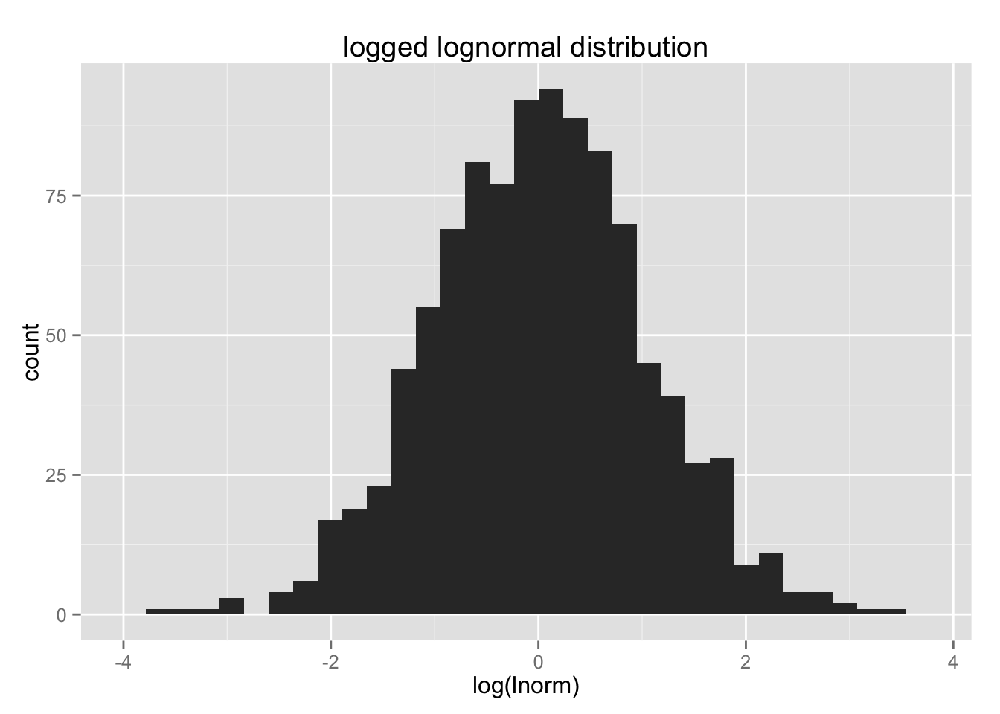

A random variable –in statistical terms– is a variable whose value depends on random chance. Each random variable has one or more parameters governing the probability of different outcomes. There are two types of random variables: discrete random variables which have a limited number of possible discrete outcomes and continuous random variables which have a (theoretically) unlimited number of possible outcomes.
Think of two examples of a discrete random variables and two examples of a continuous random variables for your area of scientific interest. What is the sample space for the random variable?
If we plot the values from a random variable using a histogram, we call the result a probability distribution. The various distributions form the basis of parametric statistics. There are four main R functions associated with each probabibility distribution. In of the below, you will replace \(dist\) with the abbreviation for that distribuction (norm, binom, etc.)
A Bernouili trial describes an event that has exactly two possibile outcomes: success and failure. Success occurs with a given probability, for example \(p = 0.2\). We know how likely a trial is to result in success, but any given trial may result in either success or failure, and this cannot be predicted for a single trial (the outcome is stochastic).
The result of a series of \(n\) Bernoulili trials with \(X\) successful outcomes results in a binomial random variable.
The expected value of the binomial distribution is \(E(x) = np\)
Binomial random variables can be simulated in R using the rbinom() function.
# 10 observations, 1 trial
rbinom(n = 10, size=1, prob = 0.5)## [1] 0 0 0 0 0 0 0 1 1 0# 1 observation, 10 trials
rbinom(n = 1, size=10, prob = 0.5)## [1] 6# 10 observations, 10 trials
rbinom(n = 10, size=10, prob = 0.5)## [1] 5 5 6 4 4 4 7 4 5 4We can use the dbinom() function to get a sense of the shape of the binomial distrubution.
library(ggplot2)
qplot(x=1:25, y=dbinom(1:25, 25, prob = 0.5), geom="line", main="binomial density prob=0.5")
qplot(x=1:25, y=dbinom(1:25, 25, prob = 0.2), geom="line", main="binomial density prob=0.5")
We can also look at this empirically by simulating data. The graph shows that the most common outcome of 5000 trials of a binomial function with a probability of 0.5 is to have approximately 2500 sucessful outcomes. It is significantly less likely to get many more or less than 2500 successes.
qplot(rbinom(n = 5000, size=5000, prob = 0.5), main="binomial distribution p = 0.5")## stat_bin: binwidth defaulted to range/30. Use 'binwidth = x' to adjust this.
Is similar to the binomial distribution, but describes rare events, when the number of trials \(n\) is unknown. Requires a single rate parameter \(\lambda\). The expected value and variance for the poisson distribution are both equal to lamba
rpois(10, lambda = 0.2)## [1] 0 0 0 0 0 0 0 0 0 0qplot(x=1:5, y=dpois(1:5, lambda = 0.2), main="Poisson distribution with lambda = 0.2", geom="line")
The uniform distribution represents a function in which the probability density is equal for each sub-interval across the a given range. This results in a flat frequency distribution. The expected value over the range \(a\) to \(b\) is \((a + b)/2\)
runif(10, min = 1, max = 10)## [1] 3.437316 8.348630 7.713995 8.446940 6.161427 7.476520 5.576452
## [8] 8.780318 1.705957 9.011614qplot(runif(1000), min=1, max=10, main="uniform distribution from 1 to 10")## stat_bin: binwidth defaulted to range/30. Use 'binwidth = x' to adjust this.
The normal distribution (also known as the Gausian distribution) is the familiar bell-curve shaped distribution that is symetrical around the mean, with diminishing tails as you move away from the mean. Many phenomena in nature are distributed as a normal distribution. The normal distribution has two parameters, the mean (\(\mu\)) and the standard deviation (\(\sigma\)).
rnorm(10, mean=0, sd=1)## [1] -0.1173211 0.3412342 1.2271489 -0.2426766 -0.2238968 -1.1935484
## [7] -0.7596147 -1.9921438 2.8413802 0.3211225qplot(rnorm(10000), mean=0, sd=1, main="Standard normal distribution ")## stat_bin: binwidth defaulted to range/30. Use 'binwidth = x' to adjust this.
The log-normal distribution resembles a normal distribution when it is logged.
rlnorm(10, meanlog = 0, sdlog = 1)## [1] 0.2809166 3.5395866 1.0409529 0.5104040 9.2369536 1.9737944 2.4225108
## [8] 1.5845101 2.9670814 0.3686999lnorm <- rlnorm(1000, meanlog = 0, sdlog = 1)
qplot(lnorm, main="lognormal distribution")## stat_bin: binwidth defaulted to range/30. Use 'binwidth = x' to adjust this.
qplot(log(lnorm), main="logged lognormal distribution")## stat_bin: binwidth defaulted to range/30. Use 'binwidth = x' to adjust this.